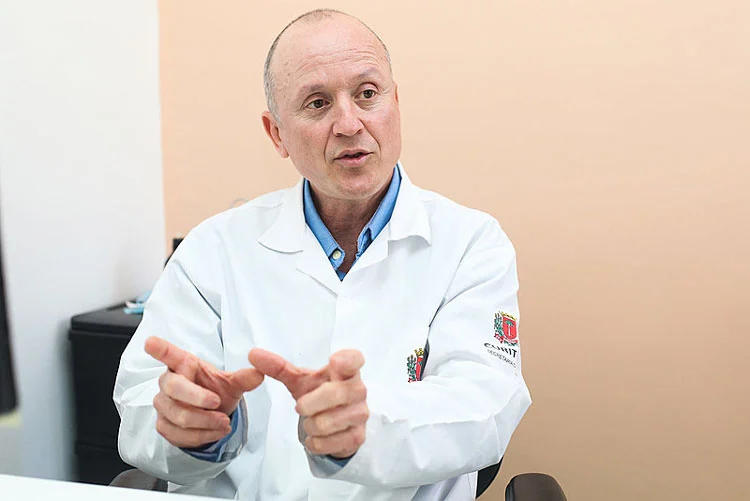
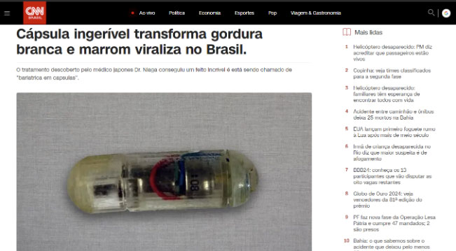

ADVERTORIAL
EXCLUSIVO: Conheça o “Truque do sal de cozinha” desenvolvido por médico japonês, capaz de sugar gordura.
Este método recém chegado ao Brasil tem sido chamado por especialistas de “milagre” do emagrecimento. Leia esta matéria para descobrir como ter acesso a este tratamento revolucionário.

Enquanto você estava distraído pelo desmatamento da Amazônia e a guerra entre Israel e Hamas, um estudo da Universidade de São Paulo (USP) em conjunto com um renomado médico japonês comprovou cientificamente que algo chamado de “Truque do sal” pode ser a única alternativa possível para derreter gordura de forma rápida e saudável.
Por isso, se você sente que está cada dia mais difícil emagrecer ou até mesmo manter o peso atual…
Se você sente que as roupas que você usava estão ficando cada vez mais apertadas no seu corpo…
Se quando você olha no espelho, vê o excesso de gordura na barriga, braços, pernas e até mesmo rosto com tristeza…
Ou ainda, em alguns casos pode ter se tornado motivo de piada na família, amigos ou até mesmo para o cônjuge, e sente falta de se sentir confiante, andar de biquíni na praia e ser uma pessoa extremamente desejada...
Então esse “truque do sal” pode ser a solução que você procura para expulsar a gordura extra e conquistar o corpo que você tinha há alguns anos atrás, eliminando de uma vez por todas a "vergonha" que você sente do seu corpo acima do peso e fazer você se sentir orgulhosa mais uma vez de poder olhar no espelho e gostar do que vê.
Se você é mais uma das mulheres ou até mesmo um homem que sofre com essa situação, você tem apenas três opções para lidar com este problema:
1 Aceita o seu destino cruel, e vive todos os dias a partir de hoje em um corpo acima do peso, com uma saúde frágil e sem autoestima.
2 Investe 15 mil reais em uma cirurgia ou procedimento estético invasivo e perigoso.
3 Ou você passa a olhar mais carinhosamente para esse tal de “Truque do Sal” que, segundo um estudo científico da Universidade de São Paulo (USP) pode eliminar até 4 quilos de gordura por semana.
Descubra hoje na +News porque o “Truque do sal” funciona tão bem para emagrecer... e se você estiver lendo essa matéria até o dia , também vamos te ensinar como você pode testar esse tal de "truque do sal", para que você possa conquistar o corpo que você sonha e pensava que era exclusivo para artistas ou influenciadores... Se sentir bonita mais uma vez.
"Eu tenho 42 anos e as pessoas me davam até mais idade por causa do meu corpo! Depois da gravidez, nunca mais recuperei o meu peso antigo, eu não usava mais biquinis... só quem passa por isso sabe o que é ter a autoestima no FUNDO DO POÇO! Lembro que sempre que ia a alguma festa ou evento, a pior hora era quando tirávamos fotos, eu tentava murchar a barriga mas como fazer para diminuir a gordura nos braços e pescoço? era um pesadelo." Marta Miranda, 42, . Saiu de 91 KGs para 69 KGs em 40 dias.
Pesquisadores explicam o “Truque do Sal”.
 Doutor João Pedro, do Hospital das Clínicas explica por que o truque é tão potente e funcional.Para você entender como esse “truque do sal” funciona, primeiro você precisa saber porque nada que você tentou antes para emagrecer funcionou até hoje…
Para isso, vou explicar para você que existem 2 tipos diferentes de gordura no corpo humano, a marrom e a branca, e depois de entender a diferença entre elas tudo vai ficar mais claro, veja:
GORDURA MARROM: Trata-se de uma gordura saudável, que nosso corpo armazena temporariamente. Não está relacionada a nenhuma doença como colesterol, e é usada como combustível para fazer as tarefas do dia a dia. Quando jovens (bebês, crianças e em alguns casos até mesmo adolescentes), nosso corpo está abastecido de gordura marrom, que é uma gordura saudável, mas com o passar dos anos isso infelizmente acaba…
GORDURA BRANCA: O vilão do emagrecimento, ela é conhecida como “gordura teimosa". Isso porque ela se aloja no nosso corpo e nunca mais sai. Essa gordura está associada a diversas doenças como colesterol alto, infartos, AVC e muitas outras. Um dos sintomas dessa gordura em nosso corpo é a falta de energia e disposição para fazer as tarefas do dia a dia, e nenhuma dieta ou rotina de exercícios é capaz de tirá-la de dentro de você.
Por isso que nada que você tentou antes trouxe resultados consideráveis. Até hoje nenhum tratamento era capaz de agir na gordura branca, mas isso mudou em 2023 no Japão, quando o Dr. Niaga descobriu o “truque do sal”.
Não é culpa sua que tudo que você tentou até aqui ter sido um fracasso quando falamos de emagrecer…
Você pode tentar dietas, medicamentos, praticar esportes mas continuará sendo refém da obesidade enquanto a gordura branca existir dentro de você.
Mas isso não será mais um problema para você, porque agora que você sabe a origem do problema, vamos entender como solucioná-lo definitivamente.
Comece o tratamento do Dr. Niaga o mais rápido possível!
Dr. Niaga, Endócrino há 13 anos, defende que cirurgias bariátricas são uma verdadeira aberração.“Após anos de pesquisa buscando uma forma de combater a gordura branca eu me deparei com a solução em um lugar impensável. Em ambientes marinhos com muito sal nascem crustáceos muito interessantes, e a casca desse crustáceo possui um componente ainda mais interessante, a quitosana.
Esse curioso componente possui uma particularidade, quando extraído da fonte correta (oceanos com alta densidade de sal), que surpreendeu toda a comunidade médica.
Isso porque, o consumo na medida certa é capaz de transformar gordura branca em gordura marrom!
Estamos falando de algo que nunca aconteceu antes, e descobrir isso mudou não só a vida dos meus pacientes como de milhares de outras pessoas ao redor do mundo, eu me sinto orgulhoso por transformar tantas vidas…”
Se a descoberta foi em 2023, por que você nunca ouviu falar até hoje?
Essa é uma excelente pergunta, afinal uma descoberta tão surpreendente que é capaz de melhorar milhares de vidas no Brasil deveria no mínimo ter sido apresentada em algum jornal local, não é mesmo?
E isso ia acontecer, no dia 09 de julho de 2023, o fantástico iria exibir uma matéria apresentando o tratamento do Doutor Niaga e compartilhar essa descoberta com todo o Brasil.
Mas segundo relatos dos próprios funcionários da TV Globo, no último dia eles cortaram a matéria e colocaram algo relacionado a memes da internet e seu impacto na vida dos jovens.
Nossa equipe jornalística investigou o motivo dessa mudança, e a verdadeira razão vai fazer você se revoltar!
A verdade é que a indústria farmacêutica é o terceiro maior patrocinador da TV Globo, e a revelação desse componente surpreendente iria diminuir a venda de remédios tradicionais como sibutramina, ozempic entre outros.
Remédios que além de não funcionarem, são caros e prejudicam a saúde dos seus consumidores, mas que é lucrativo para eles…
Eles são poderosos e conseguiram calar a TV para que você não soubesse dessa descoberta, mas o que eles não podem calar é o jornalismo independente que fazemos aqui, o nosso compromisso é com você, nosso leitor.
E enquanto o Brasil estava cego para o “truque do sal”, outros países evoluídos que não são escravos do dinheiro divulgaram o tratamento, veja:
Obesidade e acúmulo de gordura de Katelyn Smith, 27 anos. Redução de 63% da gordura corporal em 5 meses e 2 dias de uso do CK 550, duas cápsulas ingeridas por dia, antes das refeições.“Por mais que eu fizesse dieta diariamente ou fizesse todos os exercícios da academia, nada era capaz de fazer com que eu perdesse peso, eu achava que estava amaldiçoada…” - comenta Katelyn.
“Comecei a ingerir as cápsulas, e depois de uma semana, eu já me sentia mais disposta, eu suava durante a noite e parecia que eu estava malhando enquanto dormia. 30 dias depois eu tinha perdido 22 KGs”
"Depois de uns 5 meses testando a fórmula que alcancei meu objetivo de ficar com 62 KGs. O resultado foi inacreditável, e eu conseguia ver a mudança dia após dia. Não ficou sequer uma sequela da obesidade, flacidez ou algo parecido. Eu não fazia dietas nem tinha uma rotina de exercícios, ainda sim emagreci mais do que nunca” - Diz Katelyn , ao nos entregar a foto de antes e depois que você vê acima.
E ela continua seu depoimento:
“Eu vivi a minha vida inteira infeliz por conta do meu corpo, eu tentava me aceitar mas meu médico disse que se eu não emagrecesse não chegaria aos 50 anos. Graças a Deus tive acesso ao tratamento que o Doutor Niaga desenvolveu, isso mudou minha vida!
Para Katelyn emagrecer foi além da estética, foi saúde!
“...Tudo aconteceu tão natural que em 8 semanas a minha vizinha de cima perguntou se eu tinha feito bariátrica(risadas) e eu corri de volta para casa e abracei meu marido chorando de alegria por finalmente conseguir perder peso.
O tratamento chegou ao Brasil sem que você soubesse.
Mesmo que a pesquisa do Dr. Niaga não tenha sido apresentado em jornais em todo o Brasil, seu tratamento chegou em julho de 2023, produzida pela Totuel medicina natural, já conta com mais de 20 mil clientes altamente satisfeitos.
A composição que é rica no componente secreto descoberto no Japão (quitosana de água salgada) foi aprimorada com diversos outros componentes importantíssimos para a manutenção e perda de peso.
Hoje ele é vendido somente através do site oficial com o nome de CK-550!
A Universidade de São Paulo (USP) em parceria com a ANVISA estudou o poder do tratamento CK-550.
E foi descoberto que, a formulação além de transformar a gordura branca em gordura marrom. Claro que essa é a chave principal por trás do resultado surpreendente da fórmula, mas outros benefícios são:
• Diminuição do apetite e vontade por doces em até 68%.
• Metabolismo mais acelerado, semelhante a de um adolescente de 16 anos.
• Aumento da disposição sexual em até 79%.
• Emagrecer sem efeitos colaterais nem efeito sanfona, evitando flacidez causado pelo emagrecimento acelerado.
Além disso, jornais em todo o mundo relataram o poder transformador da composição, veja:
Mas claro, a melhor prova de que o tratamento funciona são as poucas pessoas do Brasil que fizeram o uso contínuo do CK-550.
Confira a transformação de pessoas próximas a você que testaram o tratamento emagrecedor:
Cleber e Rosana, Brasília – DF – 4 meses de tratamento. Guilherme Fulbar, Santa Catarina– 29 dias de tratamento. Jéssica Santos, Rio de Janeiro – 2 meses e 15 dias de tratamento. Ines Miranda, Guarulhos – 4 meses de tratamento.Parece milagre, não é mesmo?
Mas acredite ou não, é isso que acontece quando você dá ao seu corpo o poder de transformar gordura branca em gordura marrom. Da mesma forma acontece em adolescentes de 16 anos que comem sem parar e não engordam.
ATENÇÃO - NÃO adquira o CK-550 antes de ler isso:
Muitos leitores nos enviaram um email dizendo que após ler a nossa matéria, adquiriram o CK-550 através do "Google", porém não receberam o produto ou receberam as cápsulas com açúcar dentro!
Isso acontece porque alguns "safados" estão se aproveitando da popularidade do CK 550 para vender produtos falsificados. Para proteger nossos leitores, entramos em contato com os fabricantes originais do CK 550, e eles nos informaram o seu site oficial, que você encontra abaixo.
Além disso, eles também nos agradeceram por ajudar a lutar contra os falsificadores, e concordaram em oferecer uma promoção exclusiva para leitoras da +News, um desconto de 50% no preço do produto, METADE que você iria pagar, e uma garantia espetacular, chamada de "Garantia Blindada CK 550", mas apenas para quem agarrar a oportunidade até o dia . Se você estiver lendo após este dia, por favor, desconsidere esta oferta.
Confira a Garantia Blindada CK 550 abaixo:
“Você, leitora do +News Medicina, tem direito a testar o tratamento japonês emagrecedor, CK-550, por 90 dias. Apenas dê o seu voto de confiança e veja o poder emagrecedor no seu corpo. Se dentro de noventa dias, você...
• Não eliminar até 56% sua gordura ruim...
• Não fique satisfeita com o reflexo que encara você no espelho...
• Se sentir uma pessoa atraente e extremamente confiante...
• Ou se você não gostar de qualquer coisa (até mesmo da cor da cápsula ou rótulo do pote)
Então entre em contato com a gente pelo email contato@totuel.com.br, que compramos de volta todos os potes de você, pelo mesmo valor que você pagou, mesmo que você já tenha tomado todas as cápsulas.
Isso significa que você não arrisca absolutamente nada ao testar o CK-550, a não ser perder esta oportunidade e continuar acima do peso e sem a saúde adequada.
Nós podemos fazer essa garantia blindada por dois motivos:
1 Sabemos que o CK-550 funciona de verdade, e a prova disso são diversos estudos que confirmaram cientificamente os resultados da sua composição única, e por causa disso, podemos oferecer esta garantia blindada e nos arriscar a comprar os potes de você de volta pelo mesmo preço que você pagou, e mesmo que você já tenha tomado todas as cápsulas.
2 Nós temos certeza que depois de você experimentar os benefícios do CK 550, você não vai mais querer viver sem. E por causa disso, você vai contar para suas amigas, e as suas amigas vão contar para outras amigas, e assim vamos poder ajudar mais e mais mulheres a se livrar dos quilos a mais ou até mesmo da obesidade.
Sabemos que confiar em alguém nesses dias é difícil, então apenas vá até o nosso site e veja os depoimentos que confirmam a eficácia do nosso produto. Depois, escolha o seu kit e faça o teste por 90 dias. Nós garantimos os seus resultados com o nosso próprio dinheiro."
Essa oferta é exclusiva para as leitoras da +News e válida apenas até o dia ou enquanto durarem os estoques.
✅ Atualização: Descontos de 50% ainda disponíveis. Promoção válida até ou enquanto durarem os potes que os fabricantes reservaram para a nossa matéria.
Potes disponíveis neste momento: 29
Adquira o CK-550 apenas no site oficial, ou corra o risco de comprar açúcar dos falsificadores. Clique no banner abaixo, você será redirecionado ao site oficial, onde é possível adquirir o CK-550 com desconto de 50% do Blog Totuel Medicina, Garantia Blindada CK-550 e parcelamento em 12x.
Oportunidade válida até
Atenção: Restam poucos frascos! Tenha vantagem com nosso link exclusivo e ganhe até 50% de desconto e parcelamento em até 12x ecolhendo um dos kits abaixo:
Clique no banner abaixo e garanta sua oferta exclusiva! ⤵️⤵️
Efeitos colaterais e o que acontece quando você parar de tomar
Como é feito de forma natural, o CK-550 não tem efeitos colaterais prejudiciais � saúde.
O que acontece ao ingerir o CK 550? A resposta é simples: Sua gordura será transformada e depois expelida. Para explicar melhor, convidamos o Dr. Gustavo Henrique, pesquisador da Universidade de São Paulo de Ribeirão Preto.
Redação: Existe algum problema no consumo do CK-550?
Dr. Gustavo Henrique: "Para a saúde não. Na verdade, muito pelo contrário, esse tipo de fórmula age diretamente na manutenção da saúde. Se você quer eliminar gordura ruim, emagrecer com saúde, ter mais qualidade de vida, ele é o ideal. Eu recomendo que enquanto você tomar o CK-550 tome pelo menos 2 litros de água por dia."
Redação: Existe efeito colateral?
Dr. Gustavo Henrique: "Não. A fórmula é totalmente natural, talvez um efeito negativo seja perder as roupas grandes que você usa atualmente e trocar por um novo armário 5 números menor. Brincadeiras � parte, a composição é 100% natural, e aquilo que vem da natureza não possui nenhum efeito colateral negativo, basta não ultrapassar 3 pílulas por dia.”
Redação: Posso tomar mais pílulas por dia do que somente as 2 recomendadas?
Dr. Gustavo Henrique: "O máximo que você pode ingerir para acelerar seus resultados são 3 pílulas por dia, mais que isso não vai ser eficaz, porém seguindo a recomendação de 2 pílulas você terá resultados incríveis."
Depoimentos das leitoras - você experimentou o CK-550?
Nos conte sua história por email e apareça aqui!
Veja o que algumas das nossas leitoras falaram sobre o CK 550. Você experimentou e gostaria de dar seu depoimento? Envie um email para: suporte@ck550.com.br e nos conte a sua história!
Veja o que nossas leitoras estão falando e tire suas conclusões."Meu marido me traiu e isso me incentivou a emagrecer e mudar minha vida"
“Depois de 6 anos de casada tive meu primeiro filho, desde então meu corpo não conseguia emagrecer por nada nesse mundo. Ficava dias sem comer, cheguei a parar em um hospital por fraqueza por causa dessas dietas malucas que tem na internet. Mas o que me fez procurar o tratamento CK-550 foi ter descoberto que meu marido estava me traindo, eu vi suas mensagens no whatsapp com a amante, foi terrível ver ele e ela rindo de mim por ser obesa na época, mas hoje conquistei um corpo lindo do jeitinho que eu queria e sou muito mais feliz com meu novo namorado.”. - Joana Garcia, 42, Ubatuba
"Eu duvidava que fosse real, mas o CK-550 me surpreendeu positivamente."
“Sempre fui muito cético com remédios para emagrecer, mas lendo a matéria eu percebi que não estamos falando de química ou remédio da moda. Mas sim, um tratamento natural desenvolvido no Japão por um renomado médico, e isso me deixou bem mais tranquilo para testar. Confesso que mesmo assim eu duvidava que fosse tão bom, comprei sabendo da garantia de 90 dias, pensando em solicitá-la no final do tratamento, mas quando derreti 40 quilos de gordura fiquei abismado, e muito feliz!” - Rodrigo, 43, Joinville
Clique no banner abaixo e garanta sua oferta exclusiva! ⤵️⤵️
11 Comentários
| Meninas, sério mesmo, COMPREM AGORA! Eu comprei o pacote com 3 potes e em menos de 1 mês eu já vi uma diferença boa. Mas muuuuuito boa msm! Super recomendo. | |
| Atendimento muito bom! Chegou super rápido! Ja estou tomando a uma semana! Ja senti o efeito mas em breve eu volto pra falar como foi o tratamento depois desses 28 dias! Mas a compra é segura gente, podem relaxar rsrs. | |
| Eu sempre estive um pouco acima do peso! Decidi dar uma chance e realmente foi um “milagre” como eles dizem! Gente, é surreal! | |
| Acabei de fazer meu pedido! Mega Ansiosa kk | |
| Gente será que funciona? Eu quero muito perder peso, mas não sei viu… | |